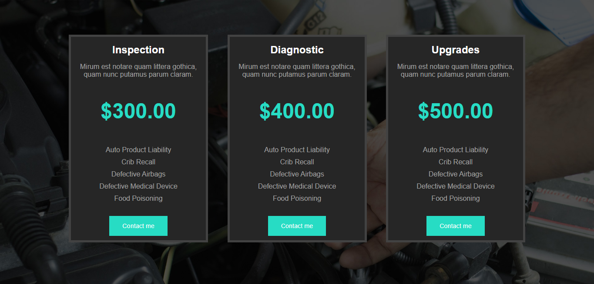
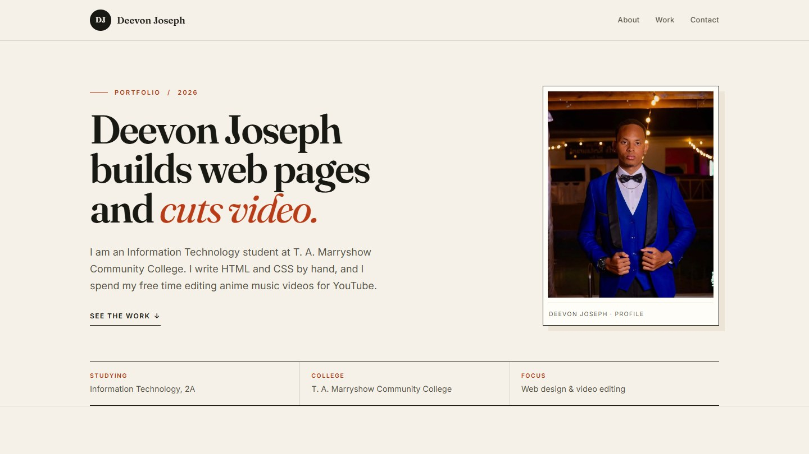

Video edit
Naruto vs Sasuke — AMV edit
A scripted remake of one of my anime music video edits. I timed the cuts to the track, assembled the sequence, and published the final cut on YouTube.
Watch on YouTube (opens in a new tab)Portfolio 2026
I am an Information Technology student at T. A. Marryshow Community College. I write HTML and CSS by hand, and I spend my free time editing anime music videos for YouTube.
See the workI came into IT through editing. Web design turned out to work the same way.
Cutting an anime music video means matching frames to a beat, trimming until the timing feels right, and exporting again when it does not. Building a page is similar: you move one element, check the result at a few widths, and adjust.
At TAMCC I am working through the front end first — semantic HTML, the box model, selectors, flexbox and grid — then the pieces behind it: JavaScript, Node.js, PostgreSQL and Nginx. Outside class I keep my YouTube channel going and experiment with new edits.
This site is the result: hand-written markup, one stylesheet, and no framework or page builder.

One edit and two builds. Each one taught me something the next project needed.
Video edit
A scripted remake of one of my anime music video edits. I timed the cuts to the track, assembled the sequence, and published the final cut on YouTube.
Watch on YouTube (opens in a new tab)
CSS build
A three-column pricing page built from a fixed HTML file using only CSS: selectors, inline-block cards, hover states and a background image.
View live site (opens in a new tab)
This site
The page you are reading. Hand-written HTML5 and a mobile-first stylesheet, with no framework or template, published with GitHub Pages.
View source (opens in a new tab)03 Contact
Email is the quickest way to reach me. I check it most days after class.